De dulce infantil sin identidad, a ícono cultural.
El contexto
Pelon llegó a nosotros con una crisis de identidad clara: un dulce mexicano que pertenece a una empresa estadounidense y, además, dirigido a niños, a los que por ley es imposible hablarles directamente.
Era el líder en ventas de la categoría «spicy candy», pero construyendo en el territorio común de todos: el sinsentido, lo extremo y lo divertido. No aprovechaba ni su posición única ni su legado.
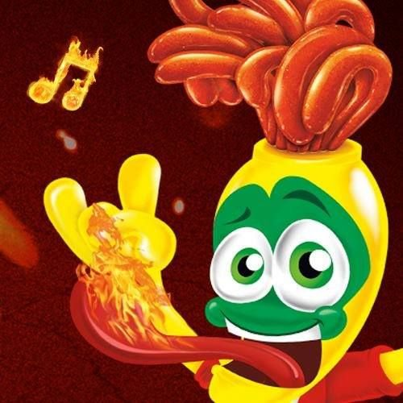
El reto & la idea
El reto: un posicionamiento diferenciador que llevara a Pelon al Top of Mind de su categoría y lo convirtiera en una love brand.
Pelon ya era parte de la vida de los mexicanos, pero todavía no se atrevía a hablar como uno. Creímos en el poder de una marca picosita y muy mexicana — que ese fuera su brand statement. Y como al mexicano le gusta jugar con el lenguaje… a jugar se ha dicho.
«Mexicano hasta los pelos.»
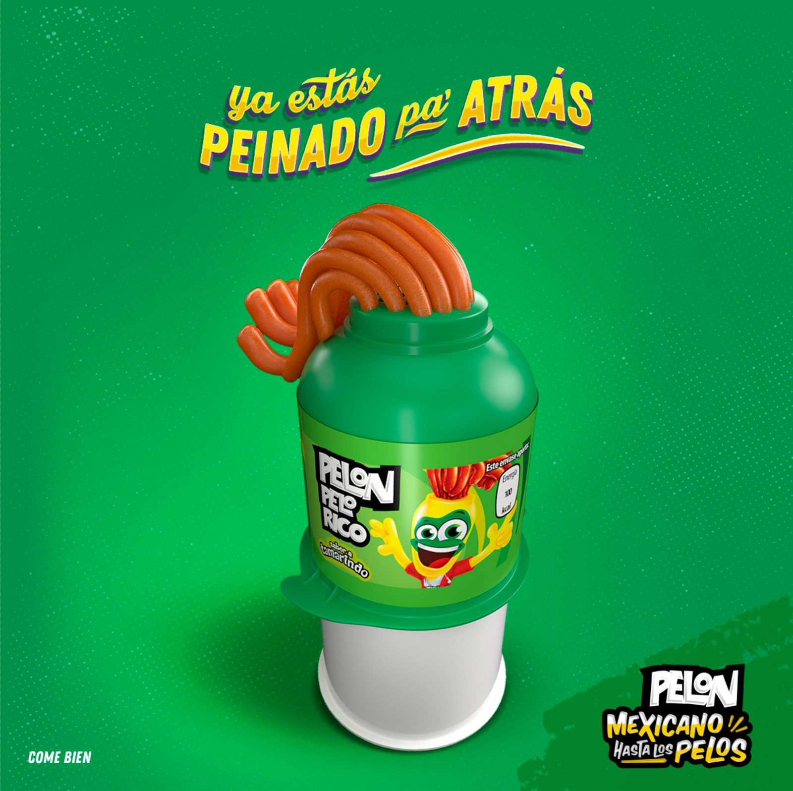
El territorio
Fotograma del film de campaña.
Posicionamiento
Arrancamos con una campaña que relacionaba frases coloquiales de México con la marca. La gente reaccionó de forma muy positiva — una señal clara de que nadie relacionaba a Pelon con Hershey's ni con una identidad estadounidense.
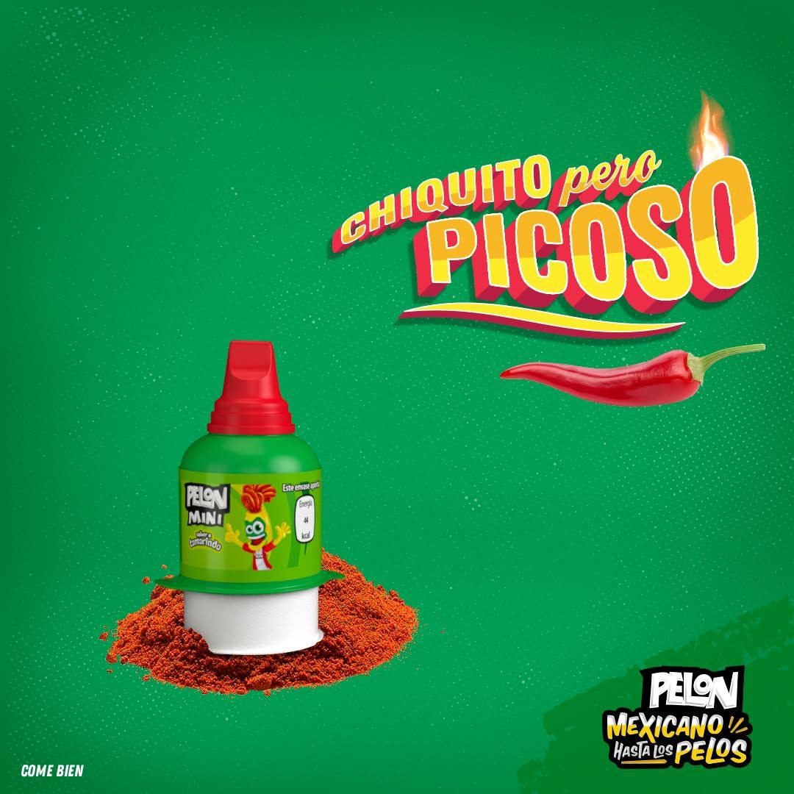
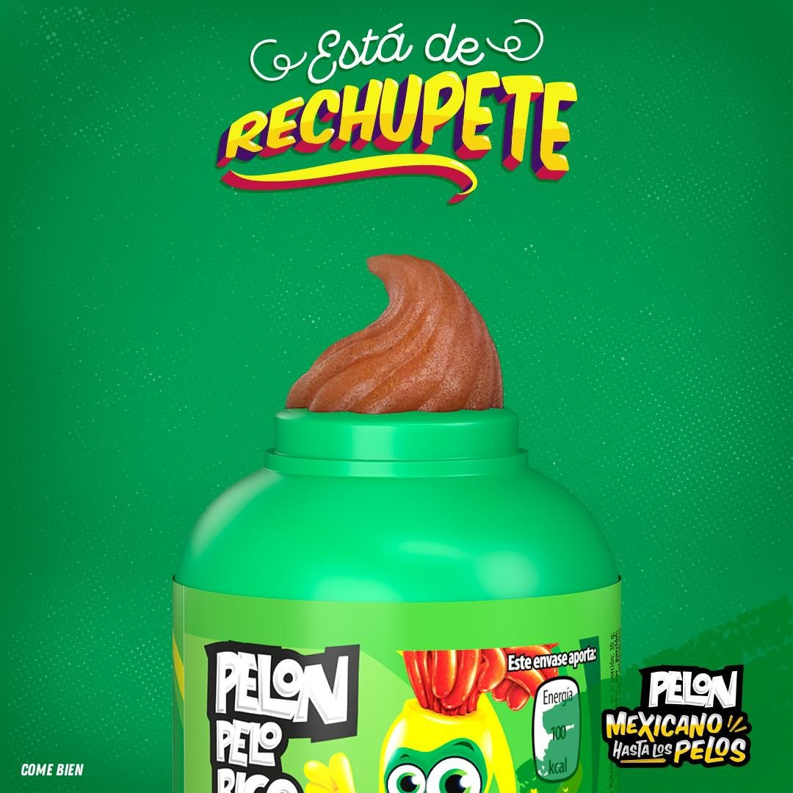
La mecánica
Tras una investigación ardua, lanzamos una campaña basada en ambigramas — mensajes que pueden tener más de un significado.
Así, los adultos se divertían con un mensaje picosito sin afectar a los niños, que solo veían publicidad muy orientada a producto.
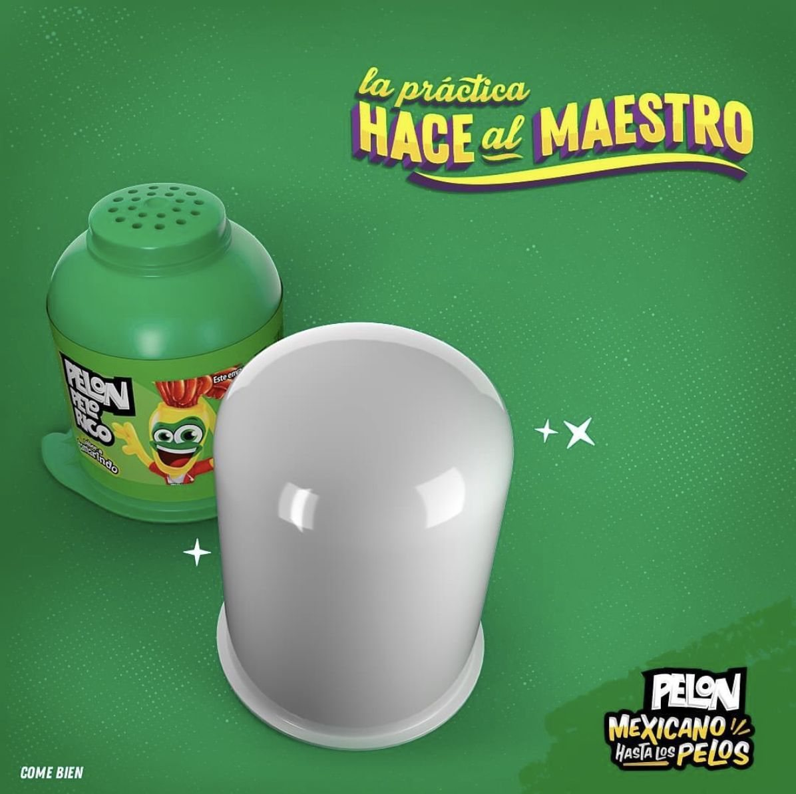
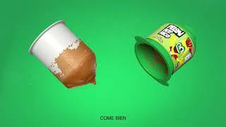
Activación · San Valentín
San Valentín puede ser demasiado dulce y empalagoso para muchos — y parecía que para quienes aman lo picante no había opciones.
Por eso creamos Pelon En Caja: un paquete de Pelon Pelonazo para regalar a tu valentín e invitarlo a disfrutar un día muy picosito.
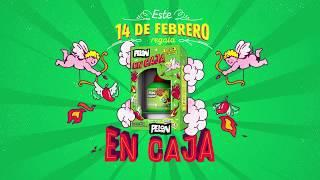
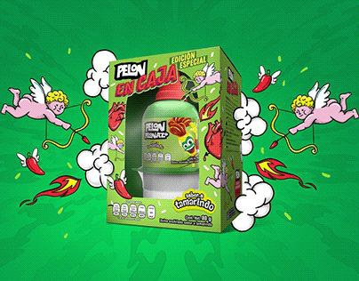
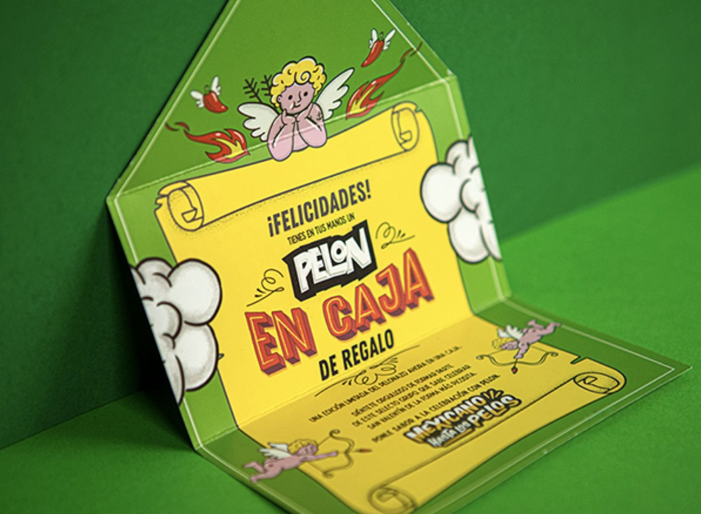
Activación · Cultura
Para fusionarnos de verdad con la cultura mexicana, nos lanzamos al ring con Pelon Encapuchado.
Un luchador real que competía en el CMLL, la empresa con más de 90 años al frente de la lucha libre en México.
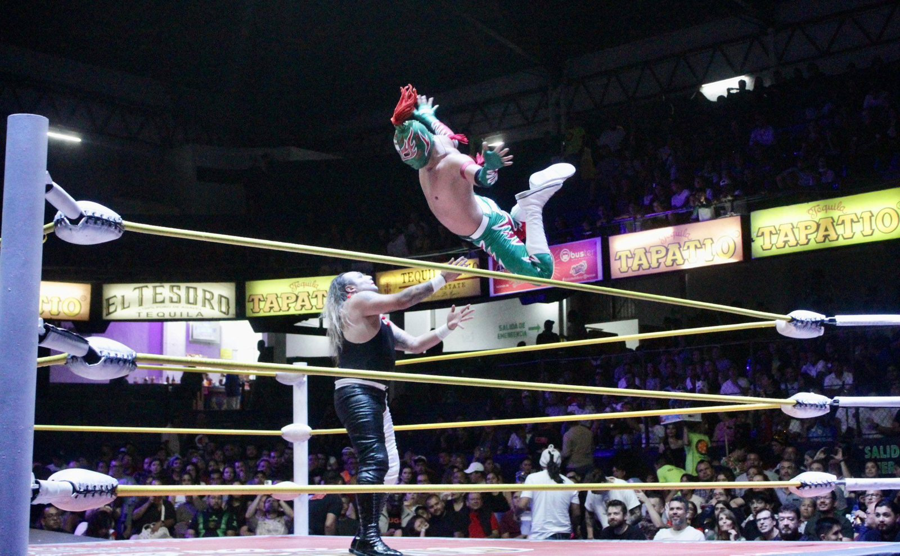
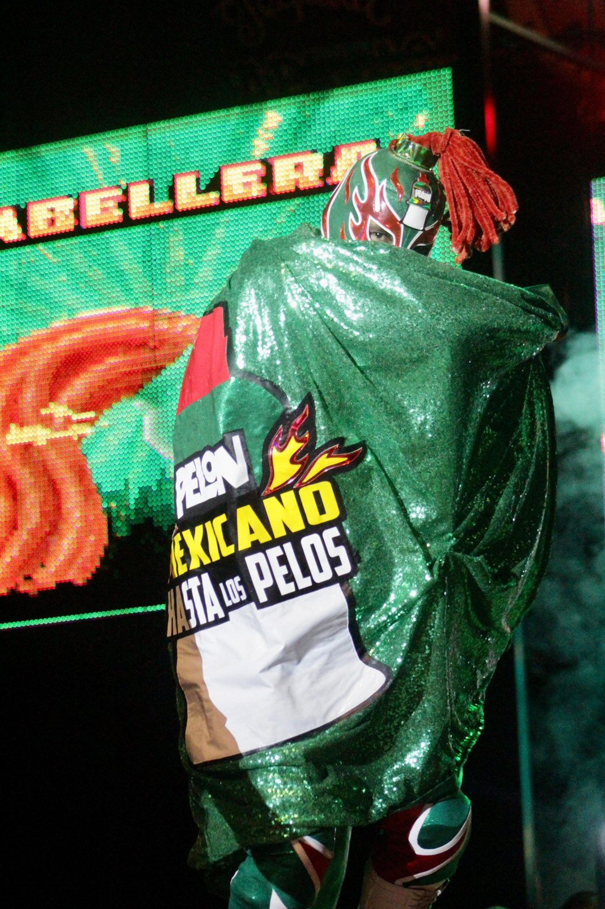
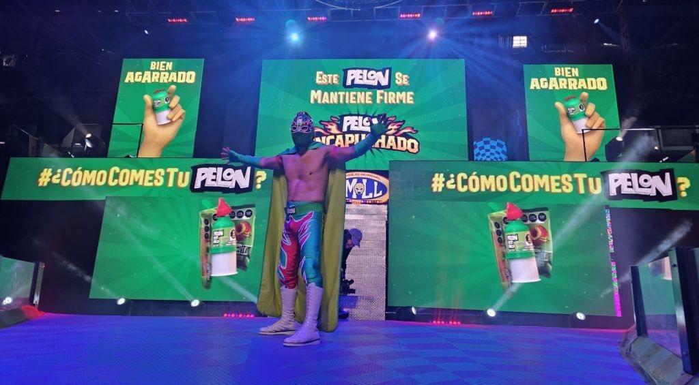
Activación · WhatsApp
Descubrimos que la gente usaba nuestros posts para mandar mensajes a sus amigos. ¿Y si se lo poníamos fácil?
Lanzamos un pack de stickers de Pelon que los usuarios podían pedirnos por WhatsApp… y nos lo pidieron más de 25 mil veces.
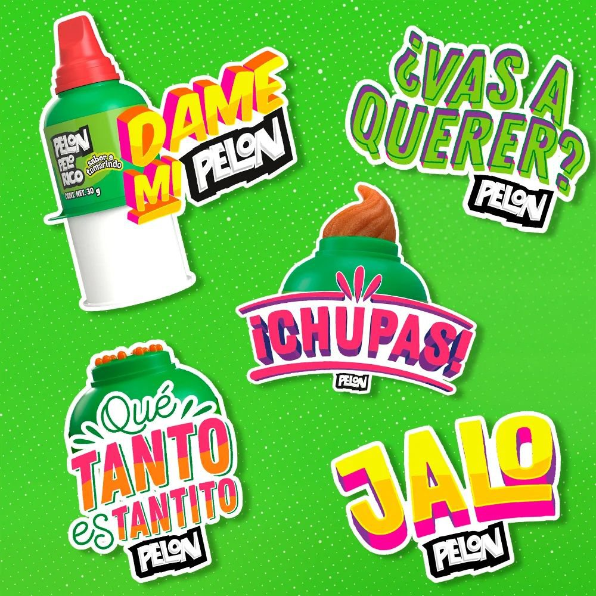
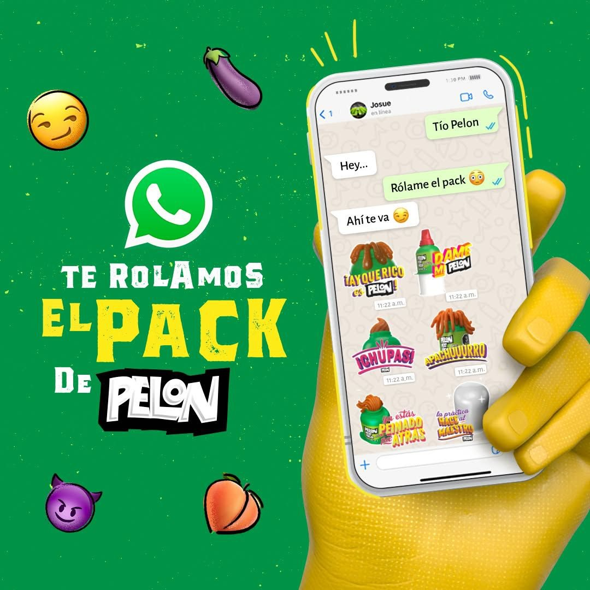
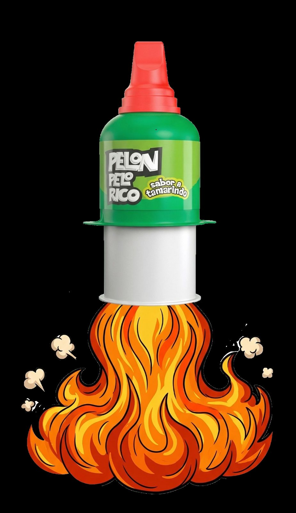
Metodología Kantar.